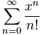
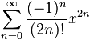
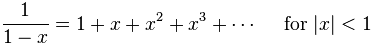
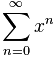
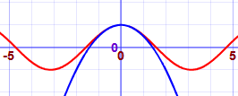
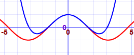
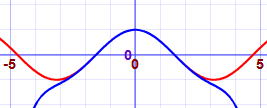
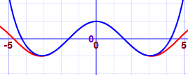
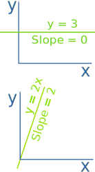

Taylor Series
A Taylor Series is an expansion of some function into an infinite sum of terms, where each term has a larger exponent like x, x2, x3, etc.
Example: The Taylor Series for ex
ex = 1 + x + x22! + x33! + x44! + x55! + ...
(Note: ! is the Factorial Function.)
Does it really work? Let's try it:
Example: ex for x=2
Well, we already know the answer is e2 = 2.71828... × 2.71828... = 7.389056...
But let's try more and more terms of our infinte series:
| Terms | Result | |
|---|---|---|
| 1+2 | 3 | |
| 1+2+222! | 5 | |
| 1+2+222!+233! | 6.3333... | |
| 1+2+222!+233!+244! | 7 | |
| 1+2+222!+233!+244!+255! | 7.2666... | |
| 1+2+222!+233!+244!+255!+266! | 7.3555... | |
| 1+2+222!+233!+244!+255!+266!+277! | 7.3809... | |
| 1+2+222!+233!+244!+255!+266!+277!+288! | 7.3873... |
It starts out really badly, but it then gets better and better!
Try using "2^n/fact(n)" and n=0 to 20 in the Sigma Calculator and see what you get.
Here are some common Taylor Series:
| Taylor Series expansion | As Sigma Notation | |
ex = 1 + x + x22! + x33! + ... |
 | |
|
sin x = x − x33! + x55! − ... |
![Taylor: Sigma n=0 to infinity of [ (-1)^n / (2n+1)! ] times x^(2n+1)](images/taylor-sin-sigma.gif) |
|
|
cos x = 1 − x22! + x44! − ... |
 | |
|  |  |
(There are many more.)
Approximations
We can use the first few terms of a Taylor Series to get an approximate value for a function.
Here we show better and better approximations for cos(x). The red line is cos(x), the blue is the approximation (try plotting it yourself) :
| 1 − x2/2! |  |
| 1 − x2/2! + x4/4! |  |
| 1 − x2/2! + x4/4! − x6/6! |  |
| 1 − x2/2! + x4/4! − x6/6! + x8/8! |  |
You can also see the Taylor Series in action at Euler's Formula for Complex Numbers.
What is this Magic?
How can we turn a function into a series of power terms like this?
Well, it isn't really magic. First we say we want to have this expansion:
f(x) = c0 + c1(x-a) + c2(x-a)2 + c3(x-a)3 + ...
Then we choose a value "a", and work out the values c0 , c1 , c2 , ... etc
And it is done using derivatives (so we must know the derivative of our function)

Quick review: a derivative gives us the slope of a function at any point.
These basic derivative rules can help us:
- The derivative of a constant is 0
- The derivative of ax is a (example: the derivative of 2x is 2)
- The derivative of xn is nxn-1 (example: the derivative of x3 is 3x2)
We will use the little mark ’ to mean "derivative of".
OK, let's start:
To get c0, choose x=a so all the (x-a) terms become zero, leaving us with:
f(a) = c0
So c0 = f(a)
To get c1, take the derivative of f(x):
f’(x) = c1 + 2c2(x-a) + 3c3(x-a)2 + ...
With x=a all the (x-a) terms become zero:
f’(a) = c1
So c1 = f’(a)
To get c2, do the derivative again:
f’’(x) = 2c2 + 3×2×c3(x-a) + ...
With x=a all the (x-a) terms become zero:
f’’(a) = 2c2
So c2 = f’’(a)/2
In fact, a pattern is emerging. Each term is
- the next higher derivative ...
- ... divided by all the exponents so far multiplied together (for which we can use factorial notation, for example 3! = 3×2×1)
And we get:
f(x) = f(a) + f'(a)1!(x-a) + f''(a) 2! (x-a)2 + f'''(a) 3! (x-a)3 + ...
Now we have a way of finding our own Taylor Series:
For each term: take the next derivative, divide by n!, multiply by (x-a)n
Example: Taylor Series for cos(x)
Start with:
f(x) = f(a) + f'(a) 1! (x-a) + f''(a) 2! (x-a)2 + f'''(a) 3! (x-a)3 + ...
The derivative of cos is −sin, and the derivative of sin is cos, so:
- f(x) = cos(x)
- f'(x) = −sin(x)
- f''(x) = −cos(x)
- f'''(x) = sin(x)
- etc...
And we get:
cos(x) = cos(a) − sin(a) 1! (x-a) − cos(a) 2! (x-a)2 + sin(a) 3! (x-a)3 + ...
Now put a=0, which is nice because cos(0)=1 and sin(0)=0:
cos(x) = 1 − 0 1! (x-0) − 1 2! (x-0)2 + 0 3! (x-0)3 + 1 4! (x-0)4 + ...
Simplify:
cos(x) = 1 − x2/2! + x4/4! − ...
Try that for sin(x) yourself, it will help you to learn.
Or try it on another function of your choice.
The key thing is to know the derivatives of your function f(x).
Note: A Maclaurin Series is a Taylor Series where a=0, so all the examples we have been using so far can also be called Maclaurin Series.